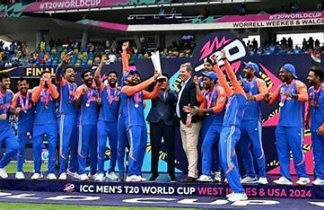

The moment we all waited for 17 years:

Celebration at marine drive mumbai:
Rohit Sharma held the mic and the near-full Wankhede Stadium erupted in cheers. It was perhaps the much-awaited moment of the day. He started to speak but they wouldn't allow him to. He tried again. Nah, not happening.
The cricket faithful in Mumbai waited for what felt like eternity. Those from far off suburbs had thronged Marine Drive from as early as morning. Fans were to be allowed free entry into the Wankhede only from 4pm on first-come-first-serve basis, but the long queues made them throw the gates open more than half an hour before that. The heavens opened up just as they rushed in to grab their spots, leaving pairs of footwear strewn behind.
Back to home page